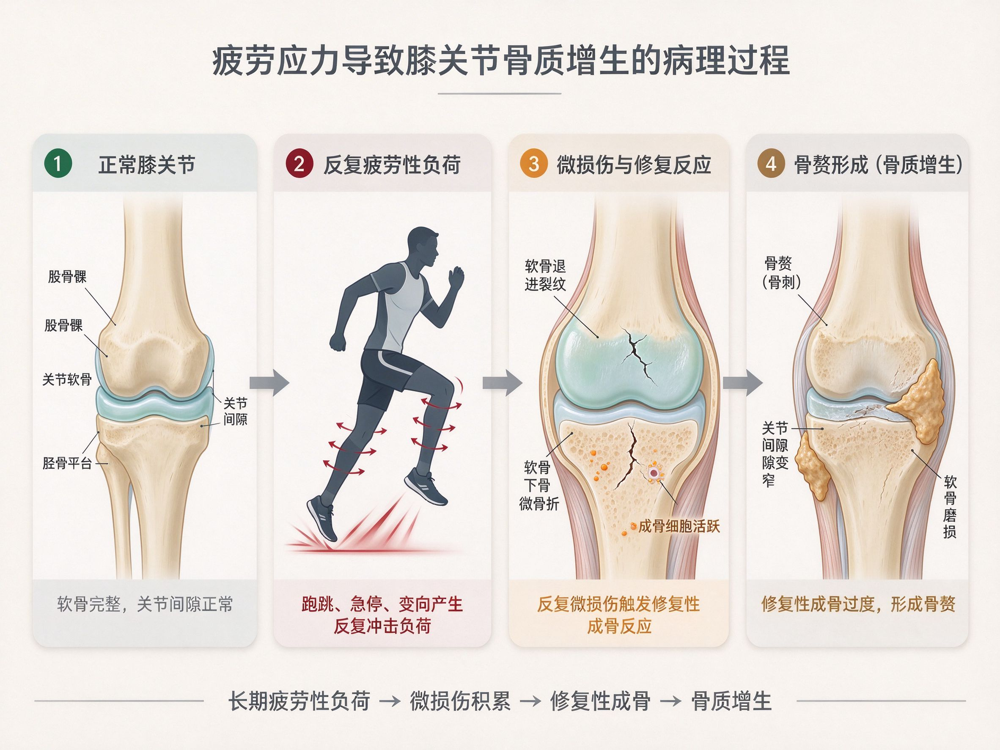
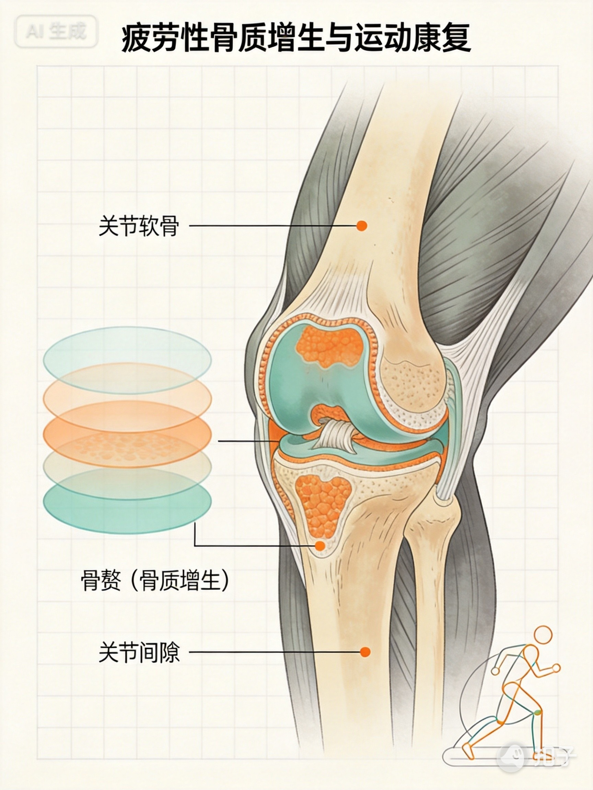

2026 · AI 课程作品集 · 作业六
医学示意图提示词工程
× 四代生成模型对比
以「疲劳应力导致膝关节骨质增生」病理图为例：反推完整图像提示词 → 用生成模型实测出图 → 对照原稿与生成稿 → 用 GMM / GAN / VAE / DDPM 四代范式解释「模型为什么会这样画」。
原稿 vs 生成稿对照
左边是参考原图（四阶段过程叙事），右边是用提示词在生成模型中实测的成果（单幅结构特写）。


| 对比维度 | 参考原稿 | AI 生成稿 | 说明了什么 |
|---|---|---|---|
| 构图版式 | 横版 4:3 · 四联面板 + 箭头串联 | 竖版 3:4 · 单幅特写 | 扩散模型面对「多面板+长指令」常主动简化为单主体构图 |
| 叙事方式 | 时间轴过程叙事（四步因果链） | 空间轴结构叙事（一张剖面讲清现状） | 生成模型擅长「画一个瞬间」，弱于「画一个过程」 |
| 文字渲染 | 大标题+面板标题+多条长句标注 | 大标题清晰，短标注（关节软骨/骨赘/关节间隙）准确 | 短中文词渲染已可用，长句仍易变形——这是逐像素去噪的天然难点 |
| 风格还原 | 手绘水彩 · 奶油色系 · 医学图谱 | 高度一致，另加方格纸底纹与橙青对比 | 风格词是提示词中还原度最高的部分 |
| 新增元素 | — | 左侧四层椭圆病程盘、右下跑步人物 | 模型会「脑补」语义相关的装饰元素，是惊喜也是失控点 |
完整图像提示词（可直接复制）
提示词 A 复刻原稿四联画；提示词 B 反推自生成稿单幅风格。按「类型 → 主体 → 构图 → 文字 → 风格 → 质量词」六段式撰写。
医学教科书风格科普信息图，横向四联画构图，4:3 横版，主题为「疲劳应力导致膝关节骨质增生的病理过程」。米白色纸质背景带轻微肌理，四个等宽圆角竖版面板从左到右排列，面板之间用灰色粗箭头依次连接，页面顶部居中深灰色大标题「疲劳应力导致膝关节骨质增生的病理过程」，标题下有一小段横线装饰。 面板一：墨绿色圆形序号①，标题「正常膝关节」；手绘水彩质感膝关节解剖图，股骨髁、关节软骨、关节间隙、胫骨平台以细引线标注中文，软骨淡青色、骨组织米黄色；面板底部灰色小字「软骨完整，关节间隙正常」。 面板二：深红色圆形序号②，标题「反复疲劳性负荷」；深灰色跑步运动员剪影呈蹬地冲刺姿态，膝与踝关节周围有多层红色圆弧冲击波纹，地面溅起红色速度线；面板底部红色加粗小字「跑跳、急停、变向产生反复冲击负荷」。 面板三：橙色圆形序号③，标题「微损伤与修复反应」；膝关节剖面特写，淡青色软骨表面出现黑色裂纹并标注「软骨退变裂纹」，软骨下骨内见紫褐色微骨折线与红色点状病灶并标注「软骨下骨微骨折」，病灶周围散布橙色成骨细胞小点并标注「成骨细胞活跃」；面板底部橙色小字「反复微损伤触发修复性成骨反应」。 面板四：棕色圆形序号④，标题「骨赘形成（骨质增生）」；膝关节边缘长出黄褐色不规则骨赘凸起并标注「骨赘（骨刺）」，关节间隙明显变窄并标注「关节间隙变窄」，软骨面粗糙缺损并标注「软骨磨损」；面板底部棕色小字「修复性成骨过度，形成骨赘」。 页面底部一条浅色长横条，内写流程文字「长期疲劳性负荷 → 微损伤积累 → 修复性成骨 → 骨质增生」。整体风格：医学图谱手绘插画，柔和奶油色系，扁平2D带轻微纸面肌理，排版工整对称，中文无衬线字体，标注文字清晰可读，高清细节。
Medical textbook-style educational infographic, horizontal four-panel storyboard, 4:3 landscape, titled "Pathological Process of Knee Osteophyte Formation Caused by Fatigue Stress". Cream paper background with subtle texture; four equal-width rounded vertical panels arranged left to right, connected by thick gray arrows; large centered dark-gray Chinese title at top with a short underline. Panel 1 — dark-green numbered badge ①, header "正常膝关节" (Normal Knee Joint): hand-drawn watercolor anatomical illustration of a healthy knee; thin leader lines with Chinese labels 股骨髁 / 关节软骨 / 关节间隙 / 胫骨平台; pale-teal cartilage, beige-yellow bone; gray caption at bottom "软骨完整，关节间隙正常". Panel 2 — deep-red badge ②, header "反复疲劳性负荷" (Repetitive Fatigue Loading): dark-gray silhouette of a sprinting athlete pushing off, concentric red impact arcs around knee and ankle, red speed lines bursting from the ground; bold red caption "跑跳、急停、变向产生反复冲击负荷". Panel 3 — orange badge ③, header "微损伤与修复反应" (Micro-damage & Repair Response): close-up knee cross-section; black cracks on pale-teal cartilage labeled "软骨退变裂纹", purple-brown microfracture lines and red spots in subchondral bone labeled "软骨下骨微骨折", scattered orange osteoblast dots labeled "成骨细胞活跃"; orange caption "反复微损伤触发修复性成骨反应". Panel 4 — brown badge ④, header "骨赘形成（骨质增生）" (Osteophyte Formation): irregular yellow-brown bony spurs protruding from joint margins labeled "骨赘（骨刺）", visibly narrowed joint space labeled "关节间隙变窄", rough eroded cartilage labeled "软骨磨损"; brown caption "修复性成骨过度，形成骨赘". Bottom strip: light horizontal band with flow text "长期疲劳性负荷 → 微损伤积累 → 修复性成骨 → 骨质增生". Style: hand-drawn medical atlas illustration, soft creamy palette, flat 2D with subtle paper grain, neat symmetrical layout, crisp Chinese sans-serif labels, high detail --ar 4:3 --style raw --v 6
医学教科书风格手绘插画，竖版 3:4，主题为「疲劳性骨质增生与运动康复」。米白色方格纸背景，画面主体为膝关节侧面剖面大特写：股骨、胫骨、腓骨呈米黄色带手绘排线，关节软骨淡青色，滑膜与骨髓呈橙红色点彩质感；膝关节内侧边缘长出不规则橙红色骨赘凸起，骨质表面粗糙。 三处中文标注配橙色圆点引线：「关节软骨」指向股骨末端软骨层，「骨赘（骨质增生）」指向边缘骨性凸起，「关节间隙」指向胫股关节缝隙。画面左侧叠加一组四层半透明椭圆盘，由上至下呈青色、橙色、橙色、青色渐变，示意病程进展层次；右下角橙色线条勾勒跑步人物剪影，象征运动康复训练。 顶部居中深灰色加粗大标题「疲劳性骨质增生与运动康复」。整体风格：手绘水彩医学图谱，柔和奶油色系，扁平2D带纸面肌理，解剖结构准确，线条细腻，中文无衬线标注清晰可读，高清细节，论文配图质感。
| 提示词要素 | 本图对应内容 | 写作要点 |
|---|---|---|
| 类型 Format | 医学教科书风格科普信息图 / 论文配图 | 先声明「信息图/四联画/单幅插画」，模型才知道如何组织版面 |
| 主体 Subject | 膝关节病理结构与骨质增生过程 | 过程类主题用「分阶段描述」，结构类主题用「分区解剖描述」 |
| 构图 Layout | 四面板+箭头 / 竖版单幅+层次盘+人物点缀 | 显式写出面板数量、排列方向、附加元素与位置 |
| 配色 Palette | 米白底 · 米黄骨 · 淡青软骨 · 橙红病灶 | 每个结构指定专属颜色，颜色是医学图最重要的语义信号 |
| 文字 Text | 标题、解剖标注、结论句、流程条 | 中文标注逐条用引号包裹；长句做好后期补字预案 |
| 风格 Style | 手绘水彩 · 扁平2D · 纸面肌理 · 论文质感 | 风格词集中放段落尾部，还原度最高 |
⚙️ 模型适配建议
即梦 / 通义万相：中文直出，短标注渲染最稳，本作业生成稿即实测成果。
Midjourney v6：英文版 + --ar 参数，中文标注易乱码，出图后补字。
DALL·E 3 / GPT-4o：长中文提示词遵循度好，适合多面板指令。
Stable Diffusion：建议只出画面后期加字；CFG 6–8 + 医学插画 LoRA。
照片写实、3D渲染、暗黑惊悚、血腥场面、解剖结构扭曲、多余肢体、乱码文字、水印、签名、过饱和霓虹色、构图倾斜、面板数量错误
四代生成模型对比表 · GMM / GAN / VAE / DDPM
写提示词之前，先知道「模型是怎么生成图像的」——四代范式各有瓶颈，难点不会消失，只会换位置。
| 模型 | 它在解决什么问题 | 核心机制 | 训练信号 | 核心矛盾 → 为什么被接棒 |
|---|---|---|---|---|
| GMM 经典 · 浅层概率模型 显式密度 · 离散潜变量 |
单个高斯只有一个峰，无法覆盖真实数据的多峰结构；需要既估计密度、又能软聚类和采样的模型。 | 离散潜变量先选第 k 个高斯组件，再从该组件采样；多个高斯按权重组合成灵活分布。 | 最大似然 / EM：先算每点软归属，再更新均值、协方差与混合权重。 | 固定高斯基元 + 浅层结构；高维下组件数、参数量爆炸，易陷局部最优。→ 为什么换：高维复杂数据需要能自动学特征的深层表示。 |
| GAN 2014 · 深度生成模型 隐式密度 · 对抗训练 |
高维图像似然难算；绕开显式密度，直接生成足够锐利、看起来真实的样本。 | 生成器把噪声映射成样本，判别器判真伪；两者对抗，生成分布逐步逼近数据分布。 | 极小极大博弈：生成器与判别器交替优化；判别信号本身就是损失。 | 博弈无稳定下降方向；判别器强弱难平衡；易 mode collapse。→ 为什么换：锐利但不可靠，「稳定」成为新的主线瓶颈。 |
| VAE 2013–2014 · 深度潜变量模型 变分下界 · 连续潜变量 |
深度潜变量模型后验通常不可解；需要可扩展、可稳定训练、潜空间可采样的方法。 | 编码器把数据压成潜变量，解码器重建；在潜空间采样解码即可生成。 | 最大化 ELBO：重建项 + 与先验的 KL 正则；重参数化让梯度可回传。 | 目标易产生「平均化」模糊结果；单层瓶颈丢细节；可能后验坍塌。→ 为什么换：稳，却不够清晰；补对抗又把不稳定带回来。 |
| DDPM 2020 · 扩散概率模型 多层潜变量 · 迭代生成 |
想要高保真、覆盖较好的生成，又不依赖 GAN 那样难驯服的对抗博弈。 | 前向过程固定加噪，反向过程学习逐步去噪；从纯噪声迭代还原出数据。 | 各噪声等级上去噪回归 / 噪声预测；对应变分下界。 | 原始采样步数多，推理慢、算力贵；依赖噪声调度与指导强度。→ 交换：用推理时间，换训练稳定 + 高质量 + 较好覆盖。 |
| 范式 | 拿到了什么 | 付出了什么 | 瓶颈被搬到哪里 |
|---|---|---|---|
| GMM | 多峰密度、软聚类、可解释的高斯组件 | 浅层表达，依赖固定高斯基元 | 表达力 |
| GAN | 一步生成，细节锐利 | 博弈不稳定，模式覆盖无保证 | 优化 |
| VAE | 训练稳定，潜空间规整，概率框架完整 | 细节易模糊，后验可能坍塌 | 近似推断 |
| DDPM | 稳定 + 清晰 + 较好覆盖 | 多步采样，推理成本高 | 推理成本 |
| 对比轴 | GMM | GAN | VAE | DDPM |
|---|---|---|---|---|
| 密度形式 | 显式密度 | 隐式生成 | 显式下界 | 显式下界 |
| 潜变量结构 | 离散单层 | 无，噪声直接映射 | 连续单层 | 多层噪声链 |
| 训练信号 | 最大似然 / EM | 生成器—判别器博弈 | ELBO 变分下界 | 去噪回归 |
| 生成方式 | 按组件采样 | 一次前向 | 一次解码 | 多步迭代 |
| 主要失败 | 表达不足 | 不稳定 / 模式崩溃 | 模糊 / 后验坍塌 | 采样慢 |
| 典型强项 | 可解释密度、聚类 | 低延迟、锐利生成 | 潜空间、压缩 | 高保真、覆盖较好 |
🧠 为什么扩散这一代更稳？
① 没有对抗博弈：训练像监督回归，梯度来自固定目标。
② 生成拆成很多小步：粗到细收敛，每步都更简单。
③ 所有噪声等级都有监督：每个样本在不同噪声强度下都参与训练。
④ 概率式目标覆盖数据：mode collapse 明显缓解。
⑤ 迭代允许纠错：代价是多步推理时间。
↩️ 回到本次生成实验
本页生成稿正是扩散模型（DDPM 系）的产物：风格还原度高、短标注清晰，但四面板被简化成单幅—— 因为「全局版式约束」恰是逐像素去噪的弱项。若用 GAN 生成，文字区域会彻底崩坏； 若用 VAE，整体会糊成水彩雾；GMM 则根本无法表达这种结构。这也解释了为什么即梦、Midjourney 等当代文生图产品几乎都以扩散模型为底座。
GMM 用混合换多峰；GAN 用博弈换清晰；VAE 用近似换稳定；DDPM 用时间换「稳定且清晰」—— 而提示词工程，就是把人类意图翻译给这一代扩散模型的接口。
图片与页面位于同一文件夹，可离线运行